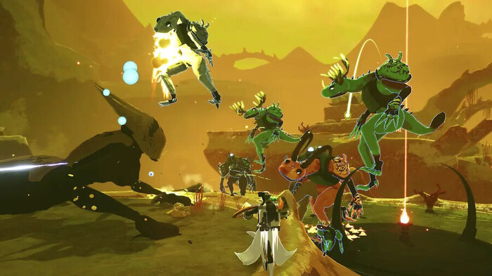

Risk of Rain 2
A Complete Guide
Risk of Rain 2 (ROR2 for short) progression is rather simple. Upon selecting your difficulty and character, you'll drop right into the action on Stage 1. It is highly advised to read up on your character abilities before jumping into the action, just so you can get a general idea of who you are working with.
Monsters
Various monsters will sprout out of the ground left and right. Killing these monsters rewards you with coins, which you use on the many chests and shrines scattered about the map you are on.
Chests and Items
Use this money on the goods and they'll grant you a random item which will greatly help you on your journey. These items grant benefits such as increased mobility, damage, area of effect attacks—the list keeps going! Beating ROR2 without items is hopeless, so grab as many as you can!
Difficulty
Be swift, however... You're on a timer! If you point your gaze towards the top-right corner, you'll spot the difficulty you selected previously as well as a bar beneath it. This bar will gradually go up to harder difficulties, making the game harder the longer you play. Be sure to grab plenty items, but not waste time doing so!
Boss Teleporter
Once you feel ready, find the teleporter on the map and activate it. This will summon a boss for you to conquer. Should you succeed, you will be rewarded with a rare item. Finish charging the teleporter to 100% by staying in its red radius and you'll be able to proceed to Stage 2... Rinse and repeat this process until you reach Stage 6, the final boss. Charge the 4 pillars, go to the arena, and fight for your life. Should you emerge victorious, make a mad dash for the entrance of the stage and charge the dropship before leaving.